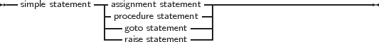

A simple statement cannot be decomposed in separate statements. There are basically 4 kinds of simple statements:
_________________________________________________________________________________________________________
Simple statements

___________________________________________________________________
Of these statements, the raise statement will be explained in the chapter on Exceptions (chapter 17, page 848)